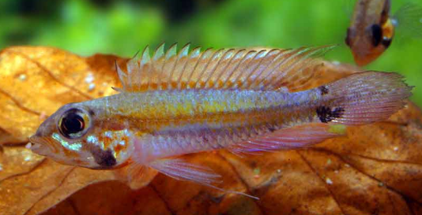

Systématique
- Ordre : Cichliformes
- Famille : Cichlidae
- Genre : Apistogramma
- Espèce : Apistogramma diplotaenia

Apistogramma diplotaenia est un petit cichlidé nain originaire du bassin du Rio Negro, connu pour sa livrée jaune à orangée ornée de deux lignes sombres longitudinales et de marques bleutées sur les nageoires.
L'espèce reste de taille modeste, avec des mâles atteignant environ 6 à 7 cm et des femelles sensiblement plus petites, ce qui en fait un pensionnaire adapté aux bacs spécifiques de faible volume mais très structurés.
C'est un poisson territorial mais relativement discret, qui occupe principalement les zones basses du bac et passe beaucoup de temps à explorer le substrat et les cachettes à la recherche de micro-proies.
En aquarium, il se montre plus à l'aise en petit harem ou en couple dans un bac spécifique, avec de nombreuses cachettes; la cohabitation avec d'autres espèces calmes est possible si l'espace au sol est suffisant et les territoires bien délimités.
Mode : pondeuse sur substrat caché; la femelle choisit typiquement une cavité, une noix de coco, une racine creuse ou une tuile pour y déposer les œufs, puis assure la garde rapprochée de la ponte et des alevins.
La reproduction est favorisée par une eau très douce et acide, une alimentation riche et des changements d'eau réguliers; le mâle défend le territoire plus large tandis que la femelle s'occupe de la progéniture.
Dimorphisme sexuel : les mâles sont plus grands, plus colorés, avec des nageoires dorsale et caudale plus développées, tandis que les femelles restent plus petites, plus trapues et prennent une teinte jaune plus intense en période de reproduction.
Espérance de vie : environ 3 à 5 ans en captivité dans de bonnes conditions, avec une eau adaptée et une alimentation variée et de qualité.
L'espèce fréquente des petits cours d'eau forestiers, affluents calmes et zones inondées de type eaux noires, caractérisés par une eau ambrée, très douce, acide et peu minéralisée, recouverte d'une litière de feuilles et de branches.
Répartition

Origine naturelle :
- Bassin du Rio Negro, affluent de l'Amazone, au nord du Brésil.
- Présent dans des affluents lents, bras morts et zones forestières inondées.
La distribution d'Apistogramma diplotaenia est relativement restreinte et associée aux systèmes de drainage de la partie moyenne et inférieure du Rio Negro, dans la portion tropicale de l'Amérique du Sud.
Paramètres de maintenance
Température : 24 à 28 °C.
pH : 4,5 à 6,5, eau acide à très acide.
GH : 0 à 6 °dGH, eau très douce à douce.
Courant : faible, avec un brassage limité et une filtration douce, de préférence sur tourbe ou sol technique pour stabiliser les paramètres.
Volume conseillé : à partir de 60 à 80 L pour un couple, davantage pour un harem, avec un sol sableux, beaucoup de racines, feuilles mortes et cachettes.
Régime alimentaire
Régime : principalement micro‑carnivore; dans la nature, l'espèce consomme de petits invertébrés benthiques, larves d'insectes et micro-crustacés trouvés dans le substrat et la litière de feuilles.
En aquarium, il convient de proposer des proies vivantes ou congelées de petite taille (artémias, daphnies, vers de vase, microvers), complétées par des granulés fins de bonne qualité adaptés aux cichlidés nains.
Des repas variés et distribués en petites quantités favorisent la coloration, la condition générale et la réussite des reproductions, tout en limitant les problèmes de pollution dans les petits volumes.